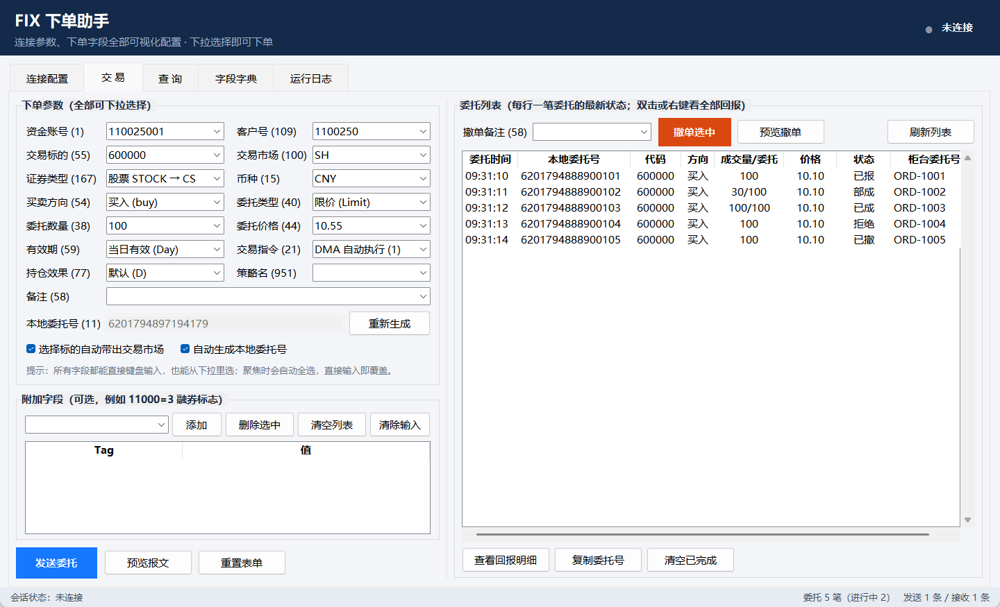

国内加速链接；若无法下载，可尝试
GitHub 原版地址
（需能直连 GitHub 下载域名）。
SHA256：3B129CD54F89A030E32A228908137198D21A431B3796ABBEF672C0BE2327932C
下载后可执行 certutil -hashfile FIX-Order-Desk.exe SHA256 核对
下载后可执行 certutil -hashfile FIX-Order-Desk.exe SHA256 核对
使用步骤
- 下载 FIX-Order-Desk.exe，放到一个不含中文的目录（例如
D:\FIX）。 - 双击运行。首次启动会在 exe 同级目录生成
config/、dict/、logs/、store/、runtime/。 - 打开「连接配置」，填写网关地址、端口、SenderCompID / TargetCompID / SenderSubID，点「保存」。
- 点「连接交易网关」，顶部状态变绿「已登录」后即可在「交易」页下单、撤单、查看回报。

提示：程序未做代码签名，Windows 可能提示“未知发布者”，点「更多信息 → 仍要运行」即可；
如果杀毒软件误报，请把 exe 加入信任。
功能
- 连接参数全部可视化配置，可保存多套档案（生产 / UAT）。
- 下单字段下拉选择，也可直接输入；数量、价格支持全角数字自动转半角。
- 委托列表每行一笔委托的最新状态；双击/右键查看这笔委托的完整回报时间线（报单、成交、撤单，含原始报文）。
- 选中委托即可撤单，无需手输委托号。
- 资金 / 持仓 / 额度查询结果按应答类型分表。
- 运行日志可过滤、可导出。